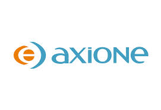

Novembre 2014 - Mai 2015
Axione
Chef de projet Conception
Description du travail effectué
- Rapport de faisabilité pour les liaisons FH entre 2 sites pour FREE :
- planification des visites,
- gestions des ressources,
- rédaction des rapports
- Dossier avant travaux pour l’ajout d’opérateur sur les pylônes FPS :
- Réalisation des plans
- Gestion des ressources
- Réalisations des devis
- Visites sur site pour vérifications des travaux
- Dossier fin de travaux
- Réalisation des plans
- Gestion des ressources
Août 2014 - Octobre 2014
Axione
Assistant Chef de projet Conception
Description du travail effectué
- Maitrise de conception :
- Planification et visite sur site (Datacenter, MSC, Maquette Bouygues télécoms) avec le client
- Rédaction des rapports
- Réalisation des devis
- Maitrise d’oeuvre :
- Planification des travaux
- Suivi des travaux
- Vérification des travaux
- Rédaction des rapports « fin de travaux »
Février 2014 - Juillet 2014
Axione
Stage Ingénieur Assistant Chef de projet Conception
Description du travail effectué
- Maitrise de conception :
- Planification et visite sur site (Datacenter, MSC, Maquette Bouygues télécoms) avec le client
- Rédaction des rapports
- Réalisation des devis
- Maitrise d’oeuvre :
- Planification des travaux
- Suivi des travaux
- Vérification des travaux
- Rédaction des rapports « fin de travaux »
Janvier 2013 - Janvier 2014
Esigelec
Projet Ingénieur "Serious game" - Chef de projet
Description du travail effectué
- Planifications des réunions
- Réunions d’équipe Réunions avec le client
- Gestion de l’équipe
- Répartition des tâches
- Gestion des conflits
- Développement du jeu côté professeur
Juin 2013 - Août 2013
Manipal Institute of Technology
Stage technicien - Développeur

Description du travail effectué
- Réalisation d’une application web « Diary and Schedule Management System » pour le département informatique de l’université
- Création d’une base de données sur le Cloud avec Microsoft Azure SQL database